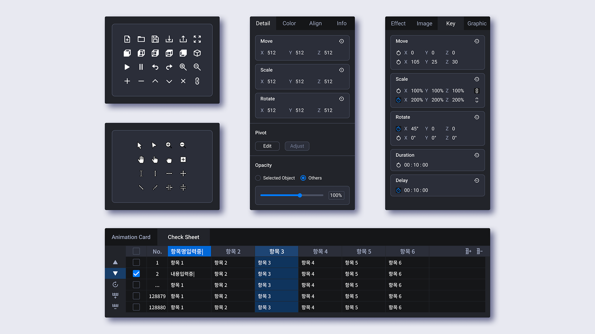
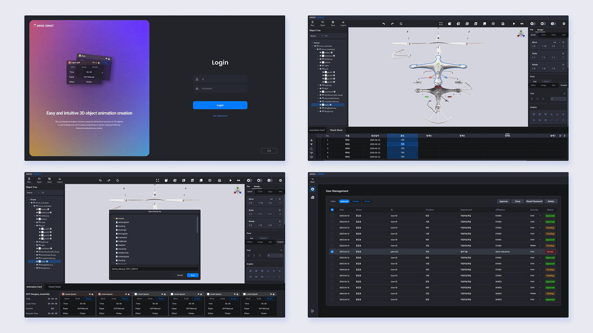

AWAS-3DMAT
3D 시뮬레이션 기반 공정 교육·훈련용 3D 매뉴얼 저작 솔루션에서 UI·UX 디자인을 전담했습니다. 기획자, 개발자와 협업하여 정의된 요구사항을 바탕으로, 설계자와 현장 작업자가 공정 정보를 보다 쉽게 이해하고 활용할 수 있도록 인터페이스와 시각 요소를 설계했습니다. 저작 기능과 공정 단계 별 시뮬레이션이 사용 흐름 안에서 무리 없이 이어지도록 UI 구성과 정보 전달 방식에 중점을 두었습니다.
초기 버전부터 주요 업데이트까지 UI 구조 정리, 컴포넌트 체계화, 사용자 흐름 정리를 지속적으로 수행하며 프로젝트 전반의 디자인 일관성을 유지했습니다. 장기간 운영되는 프로젝트 특성상 요구사항 추가와 기능 변경이 잦았으나, 컴포넌트 기반으로 디자인을 구성해 수정과 확장에 유연하게 대응할 수 있었습니다.
입사 후 처음 맡은 프로젝트로, 초기 설계 단계에서 구조적 여유를 두는 것의 중요성과 장기 프로젝트에서의 디자인 확장성에 대한 이해를 쌓는 경험이 되었습니다.

실무 투입 전에는 컴포넌트 제작 방식과 구조를 이해하는 데 집중했다면, 실무 활용 단계에서는 컴포넌트를 어떻게 관리하고 운용하는 것이 효율적인지에 대해 고민하는 시간이 많았습니다. 모든 요소를 컴포넌트화하는 것이 항상 최선은 아니었고, 과도한 컴포넌트화는 오히려 관리 부담을 늘리고 구조를 복잡하게 만드는 경우도 있었습니다.
기본적인 UI 요소는 재사용성과 일관성을 고려해 컴포넌트로 관리하는 것이 적절했지만, 여러 요소가 결합된 구성 단위 요소의 경우에는 오히려 컴포넌트화가 비효율적이라고 느꼈습니다. 이러한 요소들은 화면 맥락에 따라 변형하여 사용하는 경우가 많았기 때문에, 컴포넌트로 고정하기보다 유연하게 구성하는 편이 관리와 작업 효율 측면에서 더 적합하다고 판단했습니다.
아이콘, 버튼, 체크박스와 같이 기본이 되는 요소는 컴포넌트로 관리하고, 이를 조합한 구성은 최대 2단계까지만 컴포넌트화해 사용했습니다. 실제로는 2단계 구성만으로도 충분한 경우가 많았고, 구조를 간소화할수록 활용성과 수정 측면에서 더 효율적이라고 느꼈습니다.
